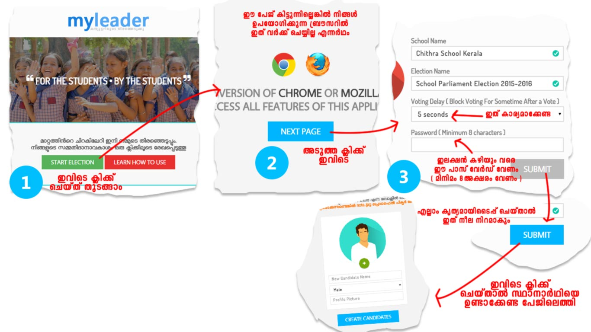
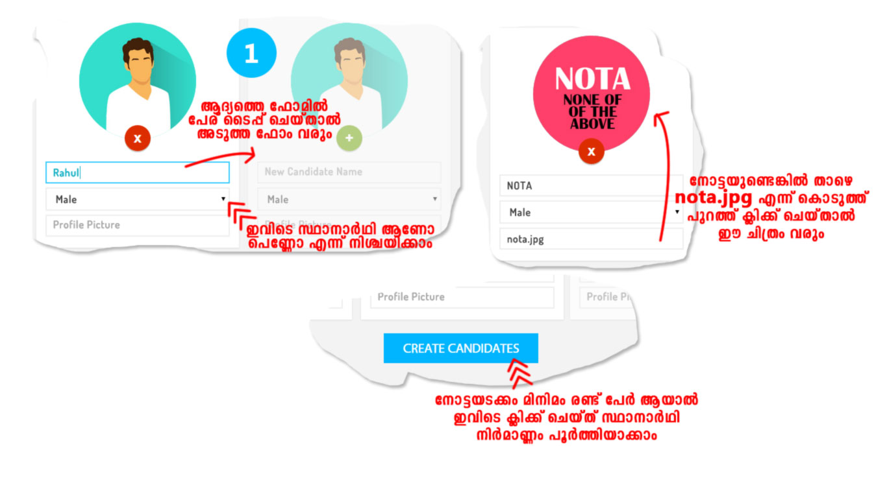
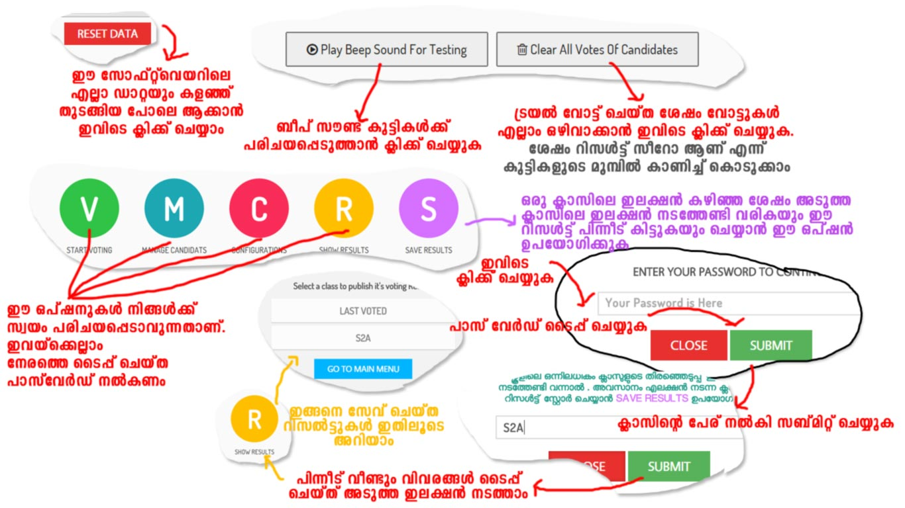

ഈ പേജില് പോയി Download Now ല് ക്ലിക്ക് ചെയ്ത് കിട്ടുന്ന ഫയല് Extract ചെയ്യുക..
വിന്ഡോസില് എങ്ങനെ Extract ചെയ്യാം എന്നറിയാന് ഇവിടെ ക്ലിക്ക് ചെയ്യുക
ലിനക്സില് എങ്ങനെ Extract ചെയ്യാം എന്നറിയാന് ഇവിടെ ക്ലിക്ക് ചെയ്യുക
- - - - - - - - - - - - - -
അപ്പോള് കിട്ടുന്ന ഫോള്ഡറിലെ myLeader എന്ന HTML ആപ്ലികേഷന് തുറക്കുക ( ഇതാണ് സോഫ്റ്റ് വെയര് )
താഴെ കൊടുത്തിരിക്കുന്ന START ELECTION ബട്ടണ് ക്ലിക്ക് ചെയ്തിട്ട് ഒന്നും സംഭവിക്കുന്നില്ലെങ്കില് താങ്കളുടെ ബ്രൌസര് യോജിച്ചതല്ലെന്ന് മനസ്സിലാക്കാം
ഈ സൈറ്റിലൂടെ Google Chrome എന്ന നല്ല ബ്രൌസര് ഡൌണ്ലോഡ് ചെയ്യാം
ഈ സൈറ്റിലൂടെ Mozilla Firefox ബ്രൌസര് ഡൌണ്ലോഡ് ചെയ്യാം


